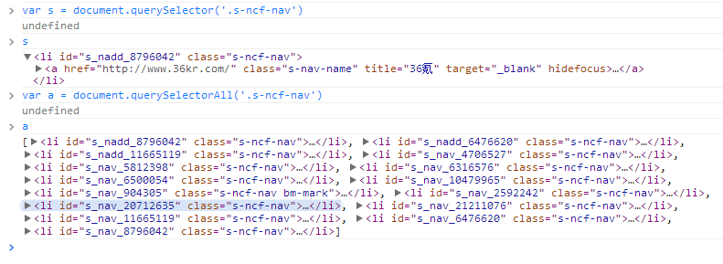

前言
在此，我不得不说移动端的兼容问题很多，并且很令人头疼，这不，这个星期又有两个让我逮着了，一个是使用zepto过程中出现的问题，一个是ios虚拟键盘的问题
我这里做一次记录，以免以后忘了，同时希望对后面做移动开发的朋友有一定帮助，首先，我们调一个简单的来说
zepto与querySelectorAll
首先，W3C提供了新的查询接口，querySelector与querySelectorAll
其中querySelector返回的是一个对象选择第一个对象，querySelectorAll返回的一个集合(NodeList)
以百度首页来说，会出现这样的现象：

其他地方可能还会说道queryselectorAll的BUG，那些我暂且不关注，这简单拷贝下别人的就说下我遇到的问题
1 <div id="test1"><a href="http://www.hujuntao.com/">设计蜂巢</a></div> 2 <p id="bar">111</p> 3 <script> 4 var d1 = document.getElementById('test1'), 5 obj1 = d1.querySelector('div a'), 6 obj2 = d1.querySelectorAll('div a'); 7 obj3 = $(d1).find('div a'); 8 console.log(obj1) //<a href="http://www.hujuntao.com/">设计蜂巢</a> 9 console.log(obj2.length) //1 10 console.log(obj3) //null 11 </script>
从这个例子来说，querySelectorAll实现是有问题的，但是我们暂时不关注他
因为，我们的项目是单页应用，所以不可避免的，view与view之间可能出现id重复，这个时候使用zepto的选择器会不会遇到问题呢？
var el = $('#el')//获取元素 var node = el.find('......')
答案当然是会的，并且是在IOS7下面会遇到问题，不得不说乔帮主一死，丐帮堕落了......
前段时间Arron做过一个研究
var element = $('<div id = "aaron">...填充大量结构...</div>'); $(root).html(element) $('#aaron') //为空
这个是很简单的一段代码，按照常规的认识，JS主线程与GUI的渲染线程是互斥的，所以在执行JS的时候，GUI应该就是挂起的， 同理执行GUI的时候亦然， 因为JS可以动态操作节点，所以如果我们在GUI绘制的时候做操作明显就会打乱了，所以互斥的解释也合理
但是实际上这样并不能直接获取到$('#aaron')，PC上基本不会出现，常规的办法都是加setTimeout
这个例子旨在说明在移动端获取元素会出问题，这不这个星期我马上遇到了一个问题，并且和上面的情况还不一样呢：
在IOS7下面，View之间的切换后，如果此时操作了DOM，并且view之间有一个重复id元素，并且我们还会用到
则此时this.$el.find('#id')这个会选取到两个元素......
PS：其中$el为backbone render时候返回的html元素，
这是一个什么问题呢？简单来说如下：
<div id="foo"> <p id="t">This is a sample error</p> </div> <div id="foo1"> <p id="t">This is a sample error</p> </div>
var el = document.getElementById('#foo') el.querySelectorAll('#t')
这个在IOS7下有一定几率会返回一个数组，并且里面装的是两个元素（意思是两个id为t的元素都被选出来的了......）
这个就是我们遇到的一个问题，应该说这个问题很隐蔽，于是我就看了下zepto里面的实现：
1 zepto.qsa = function(element, selector){ 2 var found, 3 maybeID = selector[0] == '#', 4 maybeClass = !maybeID && selector[0] == '.', 5 nameOnly = maybeID || maybeClass ? selector.slice(1) : selector, // Ensure that a 1 char tag name still gets checked 6 isSimple = simpleSelectorRE.test(nameOnly) 7 return (isDocument(element) && isSimple && maybeID) ? 8 ( (found = element.getElementById(nameOnly)) ? [found] : [] ) : 9 (element.nodeType !== 1 && element.nodeType !== 9) ? [] : 10 slice.call( 11 isSimple && !maybeID ? 12 maybeClass ? element.getElementsByClassName(nameOnly) : // If it's simple, it could be a class 13 element.getElementsByTagName(selector) : // Or a tag 14 element.querySelectorAll(selector) // Or it's not simple, and we need to query all 15 ) 16 }
element存在的情况最后使用querySelectAll选取元素，我们这里不是dom不存在而是多选了一个dom，所以这里需要针对ios7做一个适配
1 zepto.qsa = function(element, selector){ 2 var found, 3 maybeID = selector[0] == '#', 4 maybeClass = !maybeID && selector[0] == '.', 5 nameOnly = maybeID || maybeClass ? selector.slice(1) : selector, // Ensure that a 1 char tag name still gets checked 6 isSimple = simpleSelectorRE.test(nameOnly) 7 var doms = (isDocument(element) && isSimple && maybeID) ? 8 ( (found = element.getElementById(nameOnly)) ? [found] : [] ) : 9 (element.nodeType !== 1 && element.nodeType !== 9) ? [] : 10 slice.call( 11 isSimple && !maybeID ? 12 maybeClass ? element.getElementsByClassName(nameOnly) : // If it's simple, it could be a class 13 element.getElementsByTagName(selector) : // Or a tag 14 element.querySelectorAll(selector) // Or it's not simple, and we need to query all 15 ) 16 //这里需要做判断.......判断逻辑自己去搞 17 var _tmp = []; 18 if(ios7 && element){ 19 for(var i = 0, len < doms.length; i < len; i++) { 20 if(element.contains(doms[i])) _tmp.push(doms[i]) 21 } 22 return _tmp; 23 } else { return doms } 24 }
这里代码做一下处理，针对IOS7应该就没问题了.......于是进入今天第二个话题
这里给出测试地址：http://sandbox.runjs.cn/show/w5q7inp1
手机弹出虚拟键盘
之前忧患深第一次出剑时候，他说了一句：你见过吾之六凡灭剑么？然后出剑
于是，在此我想问一句：你见过IOS弹不出来键盘么......尼玛真的弹不出来啊！！！碰上fastclick的话更有不一样的感觉
我们在手机上想弹出键盘，需要的就是让文本框获取焦点，文本框获取焦点便会弹出键盘，但是我这里提出一个问题
弹出键盘==文本框获取焦点
文本框获取焦点!=弹出键盘
经过我的研究一定要这种情况下才会弹出键盘：
① 文本框获取焦点
② 手指触屏（网页区域，混合开发触屏app头不能让webview弹出键盘）
③ 没有延迟（不会ajax回调，不会延迟）
我这里举一个例子，并且此例子与fastclick还有一定关系，如果没有关系这里就没有意义了：
http://sandbox.runjs.cn/show/0bmobuyy
如果你使用ios访问这个链接，你会发现，其中的input已经获取了焦点，这个时候你快速的点击文本框就不会弹出键盘
这个情况导致的原因就是文本框已经获取焦点了，再去点击就不会弹出键盘，当然这个情况只是在使用fastclick的情况下
但是，弹出键盘还是得满足以上情况，缺一不可
结语
今天没有用公司的电脑，状态不好，暂时到此